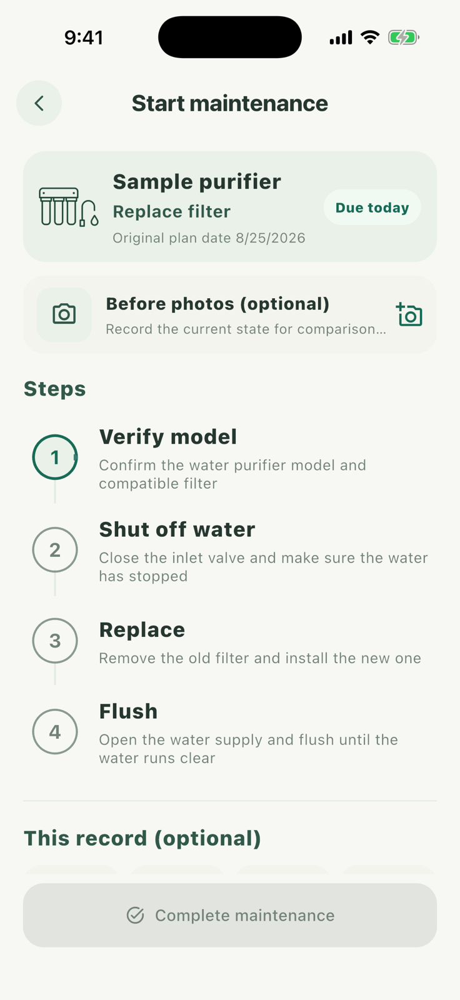

03 · Follow the steps and keep the real outcome
Complete and record the work
When the plan is due, start from Schedule or the purifier profile. The execution page preserves the original due date and guides you through each step.

- 1
Start this maintenance
Open the task from Schedule, or start from the care plan on the item profile.
- 2
Work through the checklist
Verify the model, shut off the water, replace the filter, and flush it. Tap each step when it is complete.
- 3
Add the actual outcome
Optionally add cost, material model, notes, and before/after photos. Photos never block completion.
- 4
Finish and move to the next cycle
After saving, the completion enters the lifecycle and an enabled recurring plan calculates its next date.